전체 13건
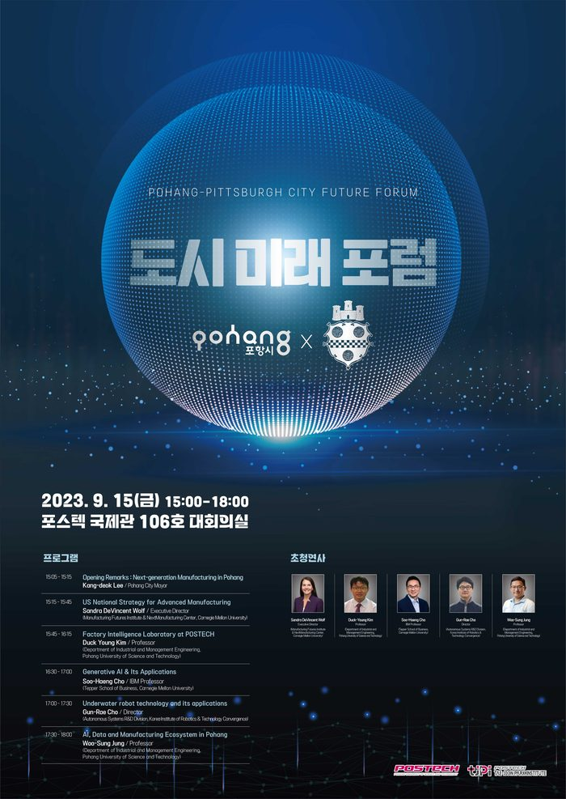
POSTECH-CMU(카네기멜론대학) 도시 미래 포럼
2023.09.15
행 사 명 : POSTECH-CMU(카네기멜론대학) 도시 미래 포럼 주 제 : 유사한 환경의 포항과 피츠버그 양 도시 간의 교류 협력 증대 기 간 : 2023.09.15(금), 15:00 ~ 18:00 장 소 : 포스코 국제관 대회의실

미래를 준비하는 실패 극복과 난제 도전 포럼
2022.7.12
행 사 명 : 미래를 준비하는 실패극복과 난제도전 포럼 주 제 : 미래를 준비하는 실패극복과 난제도전 기 간 : 2022.7.12(화) 14:00 ~16:40 장 소 : 엘타워 골드홀 (지하 1층)
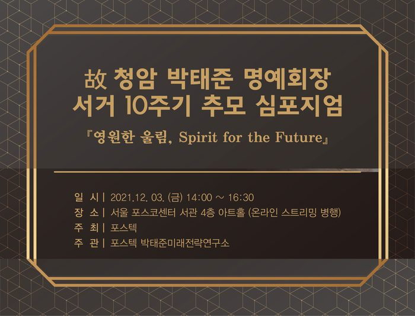
故 청암 박태준 명예회장 서거 10주기 추모 심포지엄
2021.12.03
행 사 명 : 故 청암 박태준 명예회장 서거 10주기 추모 심포지엄 주 제 : 영원한 울림, Spirit for the Future 기 간 : 2021.12.03(금) 14:00 ~16:30 장 소 : 서울 포스코 센터 서관 4층 아트홀
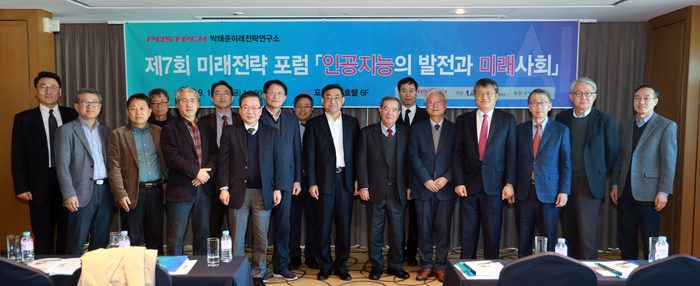
박태준미래전략연구소 제7회 미래전략 포럼
행 사 명 : 포스텍 박태준미래전략연구소 제7회 미래전략 포럼 주 제 : 인공지능(AI)의 발전과 미래사회 - 『또 다른 지능, 다음 50년의 행복』 기 간 : 2019년 11월 29일(금) 14:00 ~ 17:30 장 소 : 포항 라한호텔 6F(영일대 해수욕장)
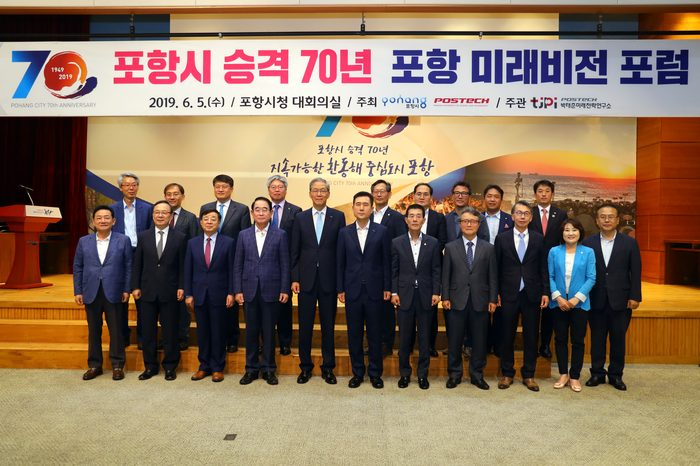
포항시 승격 70년 포항 미래비전 포럼
행 사 명 : 포항시 승격 70년 포항 미래비전 포럼 주 제 : 시승격 70년! 포항의 미래 발전을 향한 새로운 도약 기 간 : 2019년 6월 5일(수) 14:00 ~ 17:20 장 소 : 포항시청 대회의실
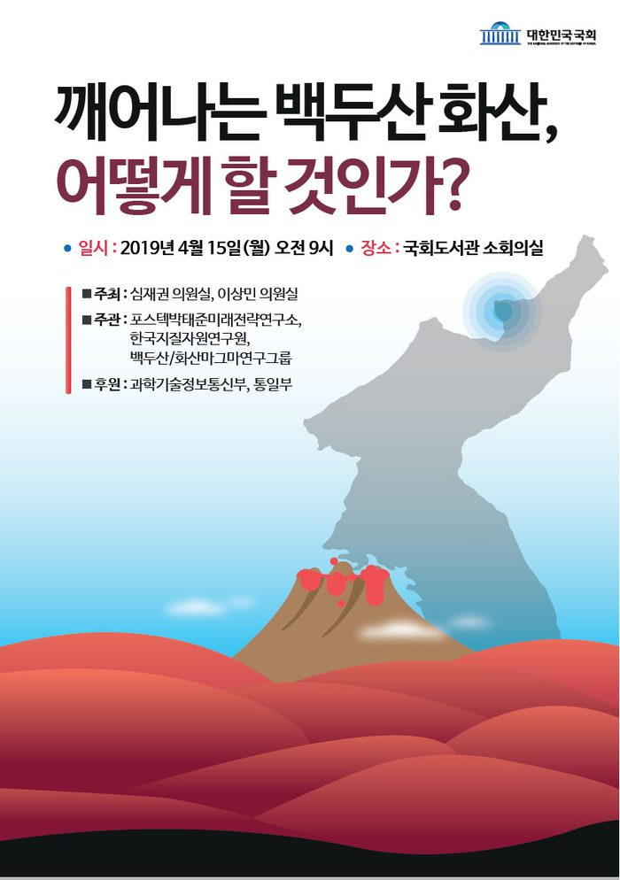
「포럼」깨어나는 백두산 화산, 어떻게 할 것인가?
행 사 명 : 「포럼」깨어나는 백두산 화산, 어떻게 할 것인가? 주 제 : 백두산에 대한 다양한 연구 과제를 어떻게 펼쳐나가야 할지 새로운 방향과 대안 모색 기 간 : 2019년 4월 15일(월) 오전 9시 장 소 : 국회도서관 소회의실
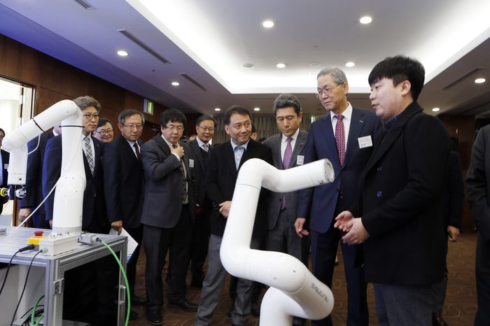
제4회 Univer+City 대학과 도시의 상생발전 포럼
행 사 명 : 제4회 Univer+City 대학과 도시의 상생발전 포럼 주 제 : 대학과 지역의 상생 발전 기 간 : 2018년 12월 20일(목) 14:00 ~ 17:00 장 소 : 포항공과대학교 포스코국제관 그랜드볼룸
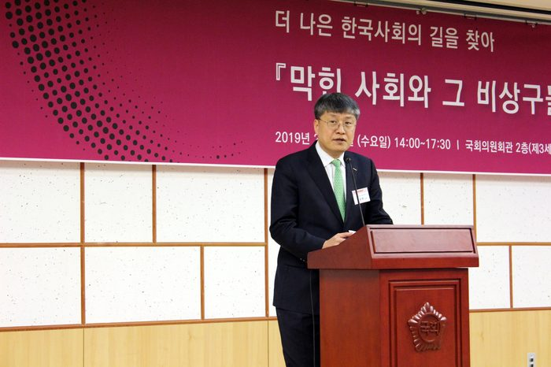
박태준미래전략연구소 제6회 박태준미래전략연구 포럼
행 사 명 : 제6회 박태준미래전략연구 포럼 주 제 : 더 나은 한국사회의 길을 찾아 - 막힌 사회와 그 비상구들 기 간 : 2019년 2월 13일(수) 14:00 ~17:30 장 소 : 국회의원회관 제3세미나실
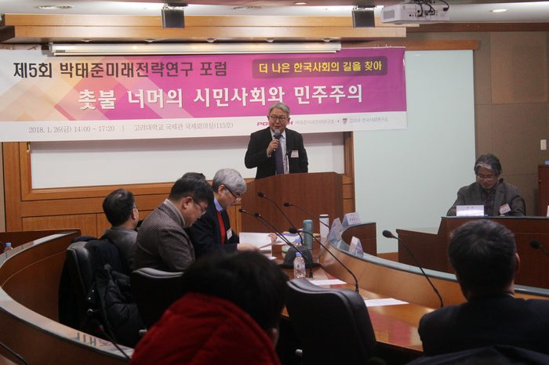
박태준미래전략연구소 제5회 박태준미래전략연구 포럼
행 사 명 : 제5회 박태준미래전략연구 포럼 주 제 : 더 나은 한국사회의 길을 찾아 - 촛불 너머의 시민사회와 민주주의 기 간 : 2018년 1월 26일(금) 14:00~17:20 장 소 : 고려대학교 국제관 115호 국제회의실

박태준미래전략연구소 2016 제4회 박태준미래전략연구 포럼
행 사 명 : 제4회 박태준미래전략연구 포럼 주 제 : 더 나은 한국사회가 되기 위해서 한국인의 의식은 어떻게 바뀌어야 하나? 기 간 : 2017년 2월 24일 14:30 ~ 17:30 장 소 : 서울대학교 호암교수회관 컨벤션센터 수련홀
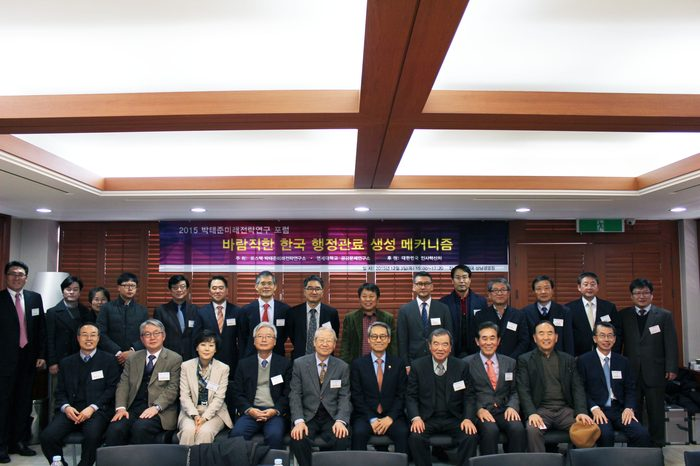
박태준미래전략연구소 2016 제4회 박태준미래전략연구 포럼
행 사 명 : 2015 박태준미래전략연구 포럼 주 제 : 바람직한 한국 행정관료 생성 메커니즘 기 간 : 2015년 12월 3일(목) 15:00~17:20 장 소 : 연세대 상남경영원(캠퍼스내) 6층 아이리스홀
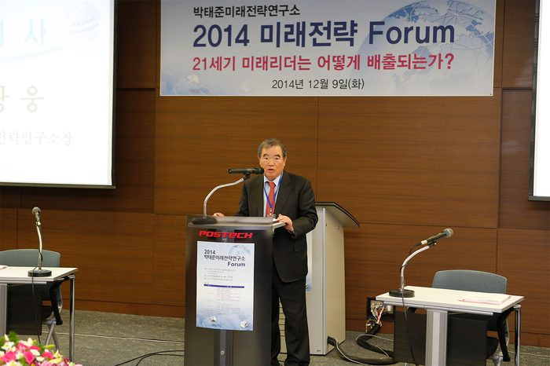
박태준미래전략연구소 2014 미래전략 포럼
▷ 행 사 명 : 박태준미래전략연구소 2014 미래전략 포럼 ▷ 주 제 : 21세기 미래리더는 어떻게 배출되는가? - 국가 지도자(엘리트) 생성 메커니즘 - 미래 사회의 리더십 ▷ 기 간 : 2014년 12월9일(화) 14:00~17:30 ▷ 장 소 : 포
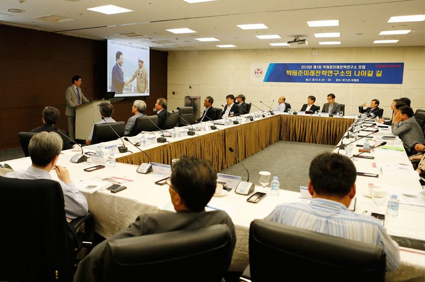
2013년도 제 1회 박태준미래전략연구소 포럼
▷ 행 사 명 : 박태준미래전략연구소 제 1회 포럼 ▷ 주 제 : '박태준미래전략연구소의 나아갈 길' ▷ 기 간 : 2013년 8월 22일(목) ~ 23(금) 2일간 ▷ 장 소 : 포스코 국제관 중회의실